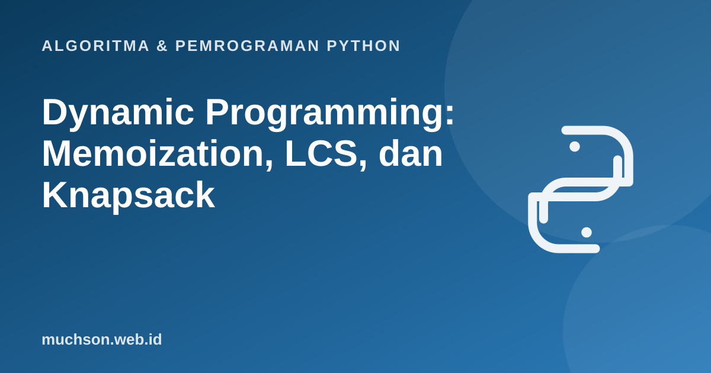

Beranda › Artikel › Algoritma & Pemrograman Python
Algoritma & Pemrograman PythonDynamic Programming: Memoization, LCS, dan Knapsack
Dynamic programming (DP) adalah rekursi yang tidak lupa. Banyak masalah memecah dirinya menjadi submasalah yang sama berulang kali; DP menyimpan jawabannya agar tiap submasalah dihitung sekali. Hasilnya: dari eksponensial menjadi polinomial.
Sebaiknya sudah paham: rekursi, list 2 dimensi, dictionary, kompleksitas

Setelah membaca dan mencoba materi ini, Anda mampu:
- mengenali submasalah yang tumpang tindih dan substruktur optimal
- menerapkan memoization (top-down) dan tabulation (bottom-up)
- menyelesaikan LCS dan 0/1 knapsack dengan tabel DP
- merekonstruksi solusi (bukan hanya nilainya) dari tabel
- menganalisis waktu dan memori solusi DP
Masalah awal: Fibonacci yang boros
import time
def fib(n):
return n if n < 2 else fib(n - 1) + fib(n - 2)
pemanggilan = 0
def fib_hitung(n):
global pemanggilan
pemanggilan += 1
return n if n < 2 else fib_hitung(n - 1) + fib_hitung(n - 2)
for n in [10, 20, 25]:
pemanggilan = 0
fib_hitung(n)
print(f"fib({n}) membutuhkan {pemanggilan} pemanggilan")fib(10) membutuhkan 177 pemanggilan
fib(20) membutuhkan 21891 pemanggilan
fib(25) membutuhkan 242785 pemanggilan
Memoization: simpan hasil yang sudah dihitung
from functools import lru_cache
pemanggilan = 0
@lru_cache(maxsize=None)
def fib_memo(n):
global pemanggilan
pemanggilan += 1
return n if n < 2 else fib_memo(n - 1) + fib_memo(n - 2)
print(fib_memo(90), "dengan", pemanggilan, "perhitungan nyata") # linear, bukan eksponensial2880067194370816120 dengan 91 perhitungan nyata
Tabulation: isi tabel dari bawah
def fib_tabel(n):
if n < 2: return n
sebelum, sekarang = 0, 1
for _ in range(2, n + 1):
sebelum, sekarang = sekarang, sebelum + sekarang
return sekarang
print(fib_tabel(90))2880067194370816120
Resep menyusun solusi DP
Contoh: Longest Common Subsequence (LCS)
LCS dua string adalah subsekuens terpanjang yang muncul di keduanya dengan urutan tetap (tidak harus berurutan rapat). Misalnya LCS dari "ABCBDAB" dan "BDCABA" panjangnya 4. Aplikasinya: perbandingan berkas (diff), bioinformatika.
dp[i][j] = dp[i−1][j−1] + 1 bila a[i] = b[j]; jika tidak, max(dp[i−1][j], dp[i][j−1])
def lcs(a, b):
m, n = len(a), len(b)
dp = [[0] * (n + 1) for _ in range(m + 1)]
for i in range(1, m + 1):
for j in range(1, n + 1):
if a[i - 1] == b[j - 1]:
dp[i][j] = dp[i - 1][j - 1] + 1
else:
dp[i][j] = max(dp[i - 1][j], dp[i][j - 1])
# rekonstruksi: telusuri dari pojok kanan bawah
hasil, i, j = [], m, n
while i > 0 and j > 0:
if a[i - 1] == b[j - 1]:
hasil.append(a[i - 1]); i -= 1; j -= 1
elif dp[i - 1][j] >= dp[i][j - 1]:
i -= 1
else:
j -= 1
return dp, "".join(reversed(hasil))
dp, seq = lcs("ABCBDAB", "BDCABA")
print("panjang:", dp[-1][-1], " contoh LCS:", seq)
for baris in dp:
print(baris)panjang: 4 contoh LCS: BCBA
[0, 0, 0, 0, 0, 0, 0]
[0, 0, 0, 0, 1, 1, 1]
[0, 1, 1, 1, 1, 2, 2]
[0, 1, 1, 2, 2, 2, 2]
[0, 1, 1, 2, 2, 3, 3]
[0, 1, 2, 2, 2, 3, 3]
[0, 1, 2, 2, 3, 3, 4]
[0, 1, 2, 2, 3, 4, 4]
Contoh: 0/1 Knapsack
Sebuah ransel berkapasitas W. Setiap barang punya berat dan nilai; ambil subset dengan total nilai maksimum tanpa melampaui kapasitas (tiap barang diambil atau tidak, sehingga "0/1"). Greedy berdasarkan nilai per berat tidak menjamin optimal di sini.
def knapsack(barang, kapasitas):
n = len(barang)
dp = [[0] * (kapasitas + 1) for _ in range(n + 1)]
for i, (nama, berat, nilai) in enumerate(barang, 1):
for w in range(kapasitas + 1):
dp[i][w] = dp[i - 1][w] # tidak ambil
if berat <= w:
dp[i][w] = max(dp[i][w], dp[i - 1][w - berat] + nilai) # ambil
# rekonstruksi barang terpilih
w, dipilih = kapasitas, []
for i in range(n, 0, -1):
if dp[i][w] != dp[i - 1][w]:
nama, berat, nilai = barang[i - 1]
dipilih.append(nama); w -= berat
return dp[n][kapasitas], dipilih[::-1]
barang = [("laptop", 3, 40), ("kamera", 2, 28), ("buku", 1, 10), ("jaket", 2, 12)]
print(knapsack(barang, 5))
# bukti greedy rasio nilai/berat bisa salah
barang2 = [("A", 10, 60), ("B", 20, 100), ("C", 30, 120)] # rasio nilai/berat: 6, 5, 4
print("DP kapasitas 50:", knapsack(barang2, 50), "(greedy rasio: A+B = 160)")(68, ['laptop', 'kamera'])
DP kapasitas 50: (220, ['B', 'C']) (greedy rasio: A+B = 160)
Kompleksitas knapsack O(n·W) disebut pseudo-polinomial: polinomial terhadap nilai W, tetapi eksponensial terhadap jumlah bit yang menyatakan W. Masalah 0/1 knapsack tergolong NP-hard.
1. Buat fungsi untuk menghitung jumlah cara menaiki tangga n anak tangga bila boleh naik 1 atau 2 anak tangga sekaligus.
2. Hitung LCS "AGGTAB" dan "GXTXAYB" secara manual.
3. Optimalkan memori knapsack menjadi O(W).
4. Ubah min_koin pada materi greedy menjadi menghitung banyaknya cara menukar suatu nilai.
- DP menyimpan hasil submasalah agar tidak dihitung ulang.
- Memoization (top-down, cache) dan tabulation (bottom-up, tabel).
- Resep: state, rekurensi, kasus dasar, urutan isi, rekonstruksi.
- LCS O(m·n); knapsack O(n·W), pseudo-polinomial.
Tanya jawab
Kapan memilih DP daripada greedy?
Mengapa disebut "dynamic programming"?
Apakah lru_cache cukup untuk semua kasus?
Referensi
- Cormen, Leiserson, Rivest, Stein, Introduction to Algorithms (edisi ke-4, MIT Press, 2022)
- Jon Kleinberg dan Éva Tardos, Algorithm Design (Pearson)
- MIT OpenCourseWare 6.006: Introduction to Algorithms
- Dokumentasi Python: functools.lru_cache